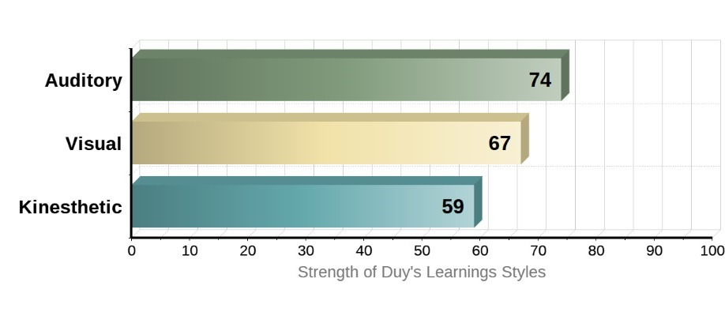
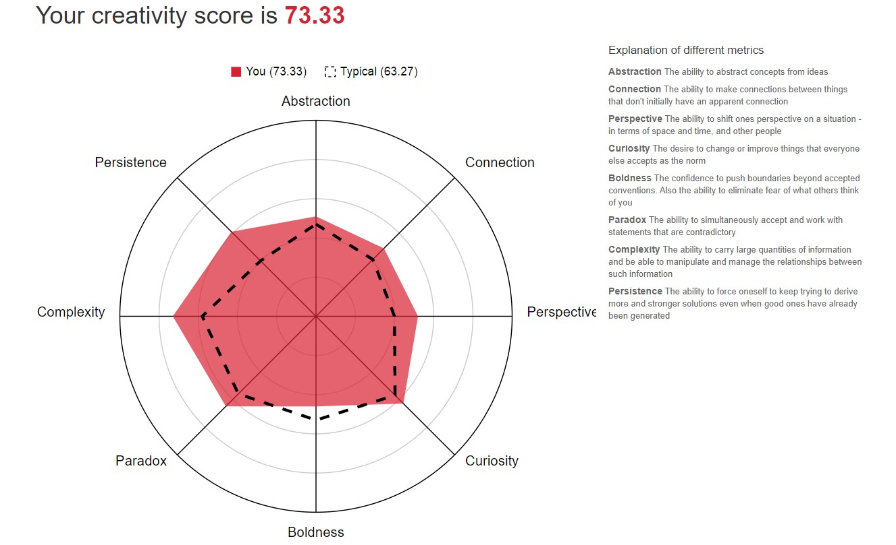
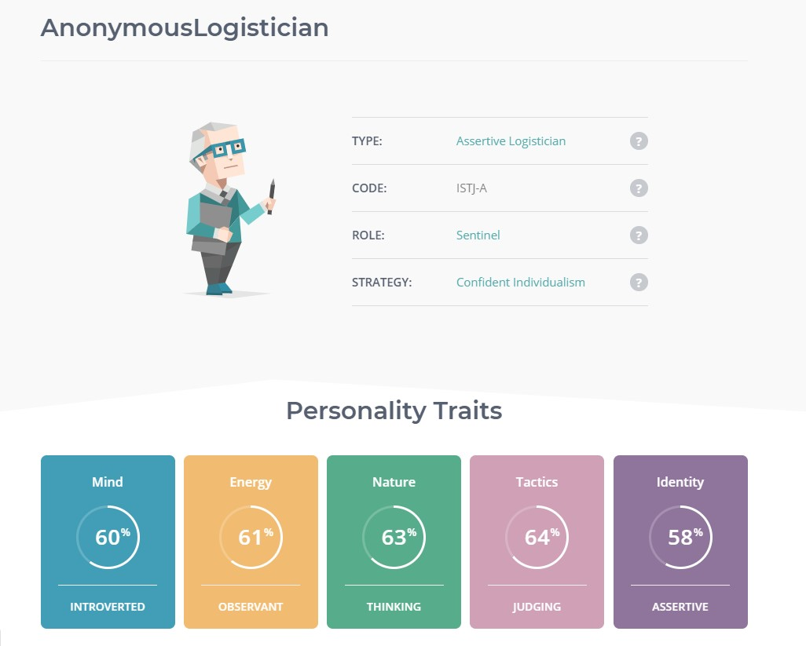

4. Personal Profile:

TEST 1: LEARNING SKILLS
- According to the test, I work and learn by hearing most, compared to seeing and doing. During a lecture, I can be able to easily comprehend, process and retain information.
- Visual is the second way that I tend to something. I can also imagine a bigger picture when discussing a topic or an assignment. In this way, I could understand the lecture well by imagination.
- My kinesthetic is lower than in other ways. However, it is still higher than the average. As a result, I also put my effort into working or solving problems.

TEST 2: CREATIVITY TEST
- Overall, almost all my aspects in the test are higher than the typical results, especially the Persistence and Complexity. By the result, I could focus on the assignment or the project without any hesitation despite the difficulty. In addition, I can be able to process and manage complicated information.
- However, my Boldness score is quite low, maybe because I’m scared of trying to something new or too challenged. But I think it is also a good way for me because I will think more clearly and carefully when starting to do something.

TEST 3: PERSONALITIES TEST
- This result is nearly correct, compared to my real life. I’m an introvert, which prefers solitary activities and gets exhausted by social interaction. However, my mind score is not quite high (60%), because I also participate in many activities, if these are my interest.
Three tests state that I can work with a team well because my creativity is quite good, I could give appropriate comments or opinion when discussing. Moreover, I can look at both sides of the argument, so I could decide which one is better. Nonetheless, I don’t like to practice regularly so I think my team needs someone who can put all effort at testing and practicing. And I also feel unsatisfied and uncomfortable when someone just does their own job without hearing any advices from the teammates, so I must find somebody that is hard-working and responsible.
- The result also shows that I’m quite observant and assertive as well. I tend to have strong habits and focus on what is happening or has already happened, but something I’m even-tempered. I could get angry if someone can’t follow the flow of the team or be lazy.
- In addition, I’m a person who is thinking and judging a lot. I don’t know why but I always look at the details meticulously and try to imagine a bigger picture to tackle this issue.
In conclusion: